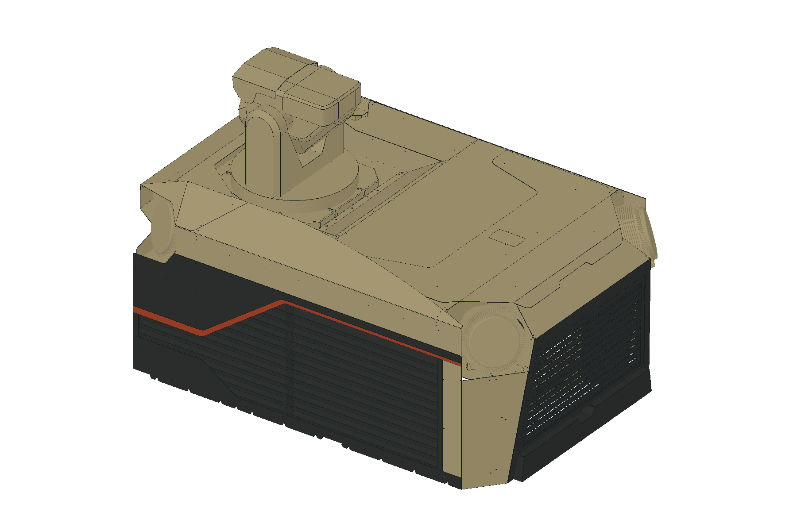

MORAL / FIELD ASSEMBLY
ההרכבה בשטח.
שלב אחר שלב.
הארגזים, מבטי היחידה ותצוגת תלת־ממד וכל 49 עמודי החוברת — מהפריקה ועד ההתקנה על הרכב.

01 / PACKING
הארגזים
זיהוי הארגזים, פתיחת המכסים והוצאת החלקים לפי סדר הפריקה.
לאחר הפריקה מסדרים את החלקים סביב אסמבלי 20 ומתחילים בהרכבה על הקרקע.
02 / MODEL
המודל
מבטי היחידה בתצורה המעודכנת. לחיצה על תמונה פותחת הגדלה.
04 / INTERACTIVE VIEW
תלת־ממד
סובבו, הגדילו ובחנו את המודל והארגזים מכל זווית.
לחצו על חלק לזיהוי ולמעבר לשלב בחוברת. במגע: אצבע אחת לסיבוב; שתי אצבעות להגדלה ולהזזה. בעכבר: גרירה לסיבוב, גלגלת להגדלה וכפתור ימני להזזה.
הסתרת המכסים נועדה לצפייה בתכולה; סדר הפריקה המלא מופיע בחוברת. בארגז B גם F4 מוסתר עם המכסה.
03 / ASSEMBLY GUIDE
חוברת ההרכבה
מהדורה 24 · 49 עמודים — מהפריקה ועד השלמת ההרכבה על הרכב.
לצפייה בפרטים אפשר להגדיל או לסובב את הטלפון לרוחב.
אסמבלי 2 מורכב אחרון על הרכב. סדר השלבים והכמויות מופיעים בכל עמוד.